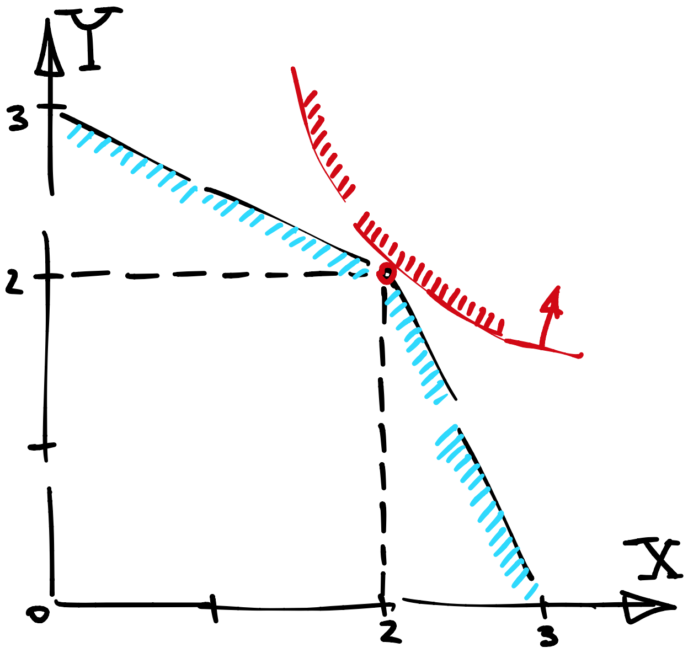
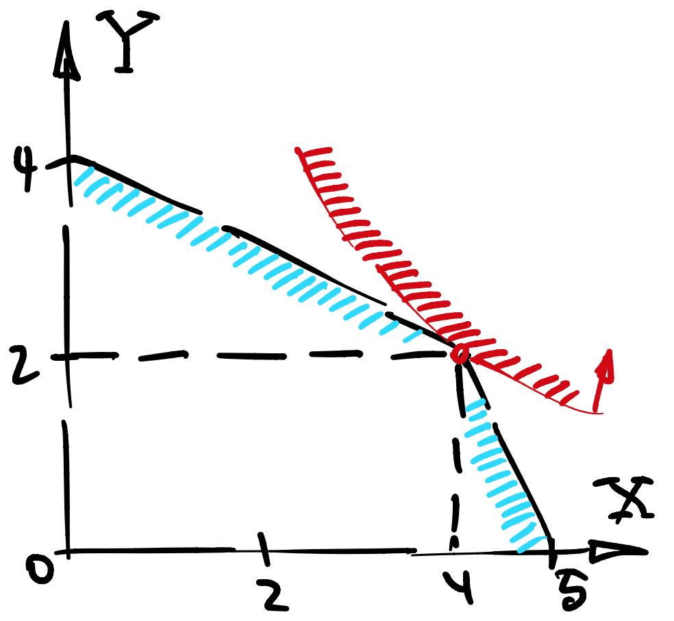
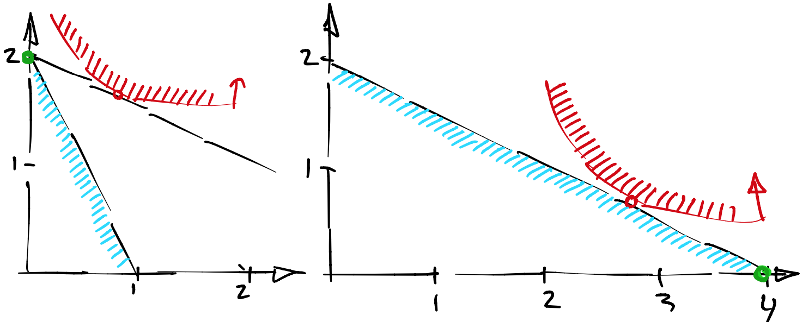

Семнадцатая лекция, часть 2
Contents
Семнадцатая лекция, часть 2¶
Трейд¶
Одно из приложений теории общего равновесия - анализ эффектов международной торговли на благополучие торгующих стран. Без международной торгиовли страны находятся в автаркии, то есть, каждая в своем равновесии и со своими ценами.
В задачах на трейд удобнее пользоваться обозначениями \(x,y,z...\) для потреблений, \(X,Y,Z...\) для производств и \(p,q,r...\) для цен.
Пример 1¶
Есть две страны с одинаковыми потребителями (можно считать что в каждой стране ровно один человек) с полезностями \(U(x,y) = \log x + \log y\), но разными технологическими множествами (по сути, двумя разными фирмами) \(F_1, F_2\) в \(\mathbb{R}^2_{+}\):
то есть, у первой страны есть преимущество в производстве товара \(y\), а у второй в производстве товара \(x\). Начальные запасы не важны, можно считать что это любая точка на границе технологического множества.
Пусть цена товара \(x\) нормирована к 1, а цена товара \(y\) равна \(q\).
1. Найдем равновесие в автаркии¶
Дифференциальное условие для первой страны можно записать как
Дифференциальное условие для второй страны страны можно записать как
Подставляя в соответствующие технологические границы, мы получаем координаты \((1/2,1)\) для первой страны и \((1/2,1)\) для второй. При этом, полезности в каждой стране равны \(\log(1/2) + \log(1)\).
2. Угадаем направление экспорта¶
Поскольку цена товара \(y\) выше во второй стране, то при международной торговле товар \(y\) будет экспортироваться в направлении второй страны, а \(x\), наоборот, в направлении первой страны. Цены будут двигаться навстречу друг другу до тех пор, пока не встретятся где-то посередине.
3. Найдем общее производство и цены¶
Если международная торговля разрешена, то цены должны прийти в равновесие Вальраса, которое, как известно, является Парето оптимальным. Это значит, что две фирмы, которые раньше работали отдельно теперь будут оптимально распределять производство, как если бы находились в руках у одного собственника.
Если полезность агентов одинаковая во всех странах и принадлежит к классу легко агрегируемых (коб дуглас, леонтьев, ces), то надо просто максимизировать полезность репрезентативного агента против совместного технологического множества.
{kind=link}
Легко видеть, что общее производство должно быть на уровне \((X,Y) = (2,2)\) и, поскольку каждый агент потребит половину, цены установятся согласно дифференцияльной характеристике:
то есть, как раз между \(1/2\) и \(2\).
{kind=link}
Пример 2¶
В предыдущем примере выгода от торговли была очевидна. А что если одна из двух стран обладает абсолютным преимуществом в производстве всех товаров.
Будет ли торговля оптимальной тогда?
1. Найдем равновесие в автаркии¶
Так же как и в первом примере, дифференциальное условие для первой страны можно записать как
Дифференциальное условие для второй страны страны можно записать как
Подставляя в соответствующие технологические границы, мы получаем координаты \((1/2,1)\) для первой страны и \((2,1)\) для второй.
2. Угадаем направление экспорта¶
Так же как и в первом примере, поскольку цена товара \(y\) выше во второй стране, то при международной торговле товар \(y\) будет экспортироваться в направлении второй страны, а \(x\), наоборот, в направлении первой страны. Цены будут двигаться навстречу друг другу до тех пор, пока не встретятся где-то посередине.
3. Найдем общее производство и цены¶
Совместное технологическое множество это такая трапеция с изломом в точке \((4,2)\).
{kind=link}
Всего возможно три варианта, в котором будет равновесие:
если производство на верхней арке технологического множества, тогда цена будет как во второй стране, то есть, \(q = 2\).
если производство на правой арке технологического множества, тогда цена будет как в первой стране, то есть, \(q = 1/2\).
если производство на изломе, тогда первая страна производит \(4\) единицы товара \(x\), первая страна производит \(2\) единицы товара \(y\), и цена \(q\) должна быть в интервале \([1/2,2]\).
Сделаем догадку, что решение будет на изломе. Тогда нам известны бюджеты \(B_i\) каждой из стран:
избыточный спрос на первый товар описывается уравнением
а избыточный спрос на второй товар
Нам достаточно приравнять любое из двух к нулю, поскольку в экономике Эрроу-Дебре избыточные спросы линейно зависимы. Легко угадывается решение \(q = 2\).
Наконец, поскольку для Кобб Дугласа решение всегда внутреннее, единственное что осталось проверить - это то что цена попала в интервал \([1/2,2]\). Это так, следовательно мы нашли равновесие.
4. Подведем итог¶
Первая страна специализируется на производстве товара \(Y\), а вторая страна на производстве товара \(X\), однако вторая страна потребляет все как раньше, поскольку цены для нее не поменялись, а значит не изменилось и потребление.
{kind=link}
Все равно есть парето улучшение и первая страна найдет способ отблагодарить вторую.